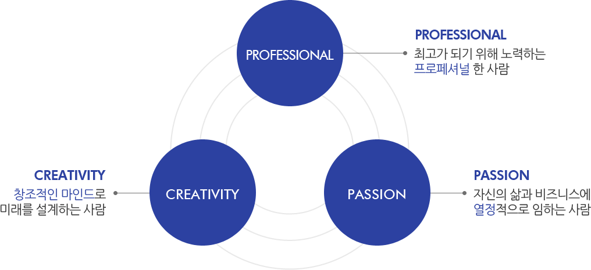
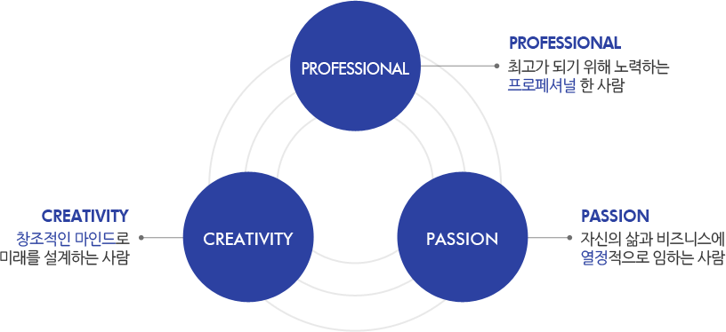
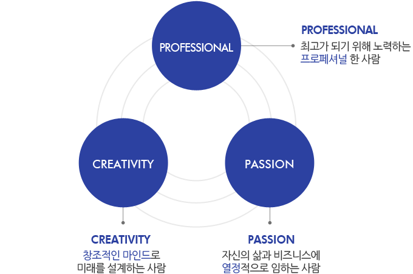
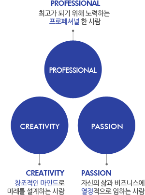
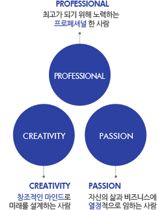

인재상
당신의 열정은 블루코어의 미래이자 꿈입니다. 끊임없이 소통하고 도전을 즐기는 인재를 기다립니다.





복리후생
회사에 대한 만족도를 높이고 직원 개인의 즐거운 삶을 위해 다양한 복지제도를 운영하고 있습니다.
-
Blue Point
개인의 자아 실현을 위한 선택적 복리후생 포인트 제도로 개인별로 부여된 포인트를 취향과 Life Style에 맞게 사용할 수 있습니다.
-
Blue Fresh
건강한 직장생활을 위해 주 5일 근무제를 시행하고 있으며 장기근속자의 공로를 인정하고 Refresh를 위해 파격적인 휴가비를 지원하고 있습니다.
-
Blue Reward
성공적인 프로젝트 성과를 만들어내거나 창의적 아이디어를 제안한 직원을 대상으로 분기마다 포상제도를 운영하고 있습니다.
-
Blue Present
경조사 발생 시 휴가 및 경조금 지원 및 명절 선물은 물론, 매년 직원들의 건강을 위한 무상 건강검진을 실시하고 있습니다.
채용절차
창의적 가치와 혁신을 일구는 블루코어의 새로운 발걸음에 당신을 초대합니다.
Step 01
입사지원Step 02
서류심사Step 03
실무진면접Step 04
임원진면접Step 05
최종합격
- · 지원 관련 문의는 이메일로 보내 주시기 바랍니다. recruit@blue-core.com
· 제출된 지원서는 심사를 위해서만 활용되며, 제출된 서류는 일체 반환하지 않습니다.
· 장애/보훈 대상자는 관계법령에 의거하여 우대합니다.
· 이력서에 기재된 학력 및 경력사항 등 기재사항이 허위임이 판명될 경우, 합격이 취소될 수 있습니다.